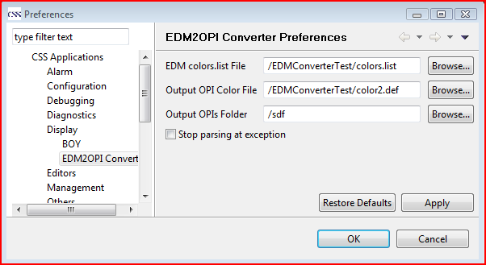

EDM2OPI converter can help to convert some basic widgets from EDM edl file to BOY OPI file. Currently, it only supports the conversion of limited EDM widgets: Label, TextUpdate, Rectangle, Line and Group. More widgets will be supported in future.
To convert edl files to OPI files, all the edl files and the EDM colors.list must be accessible in the CSS Workspace, i.e. visible in the CSS Navigator. This can be accomplished by copying them into the workspace, or by creating a linked folder in the CSS Workspace that points to the directory which contains the EDM files. To create a linked folder in the Navigator, use use the menu File/New/Other.../General/Folder, then the "Advanced" tab to create a folder that links to a directory outside of the Workspace.
Before edl files can be converted to OPI, some preferences must be set first as shown in this figure. The preference page can be opened via menu CSS->Preferences...->CSS Applications->Display->EDM2OPI Converter

Right clicking one or multiple edl files in CSS navigator and choose Convert to OPI file will convert all the selected edl files to OPI files.